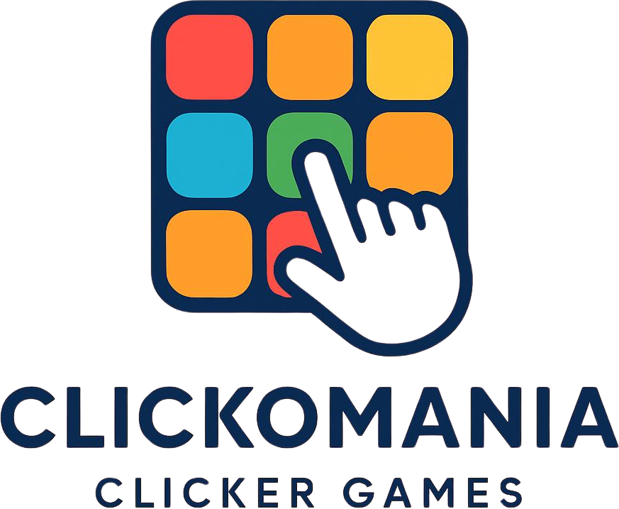
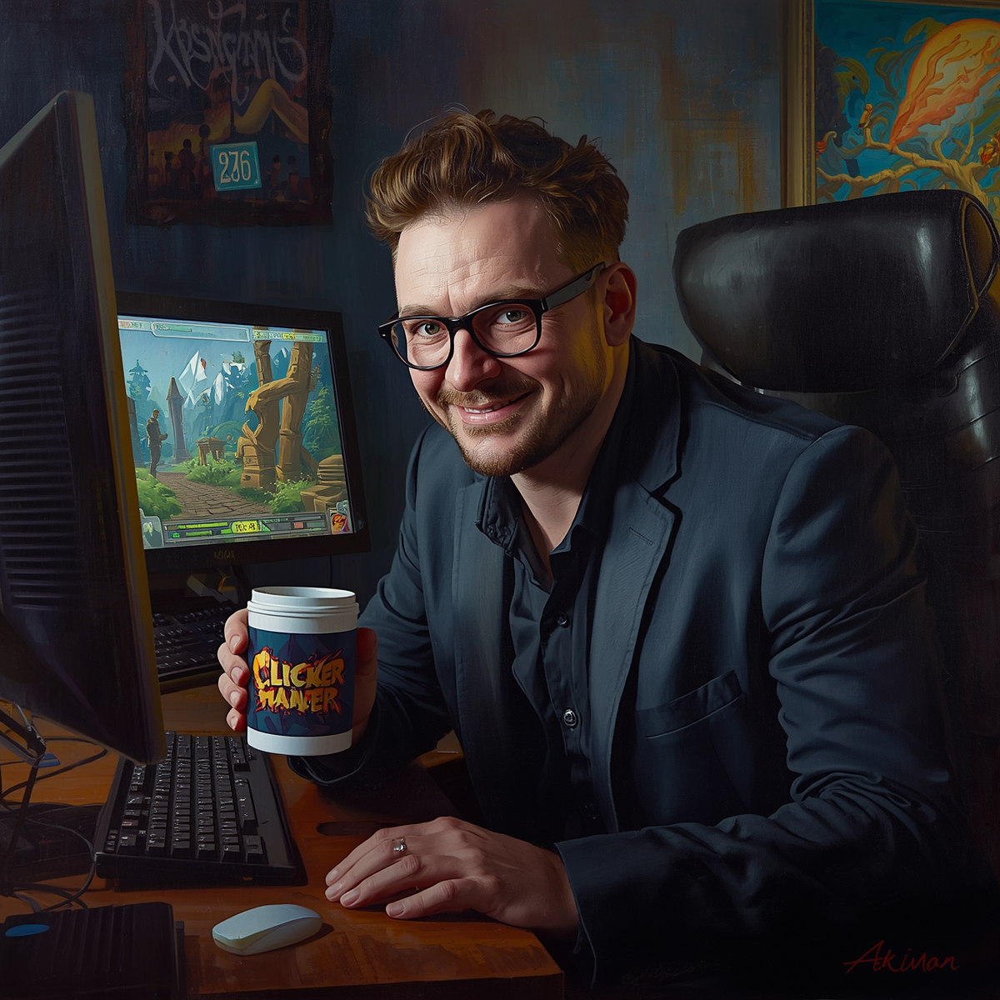
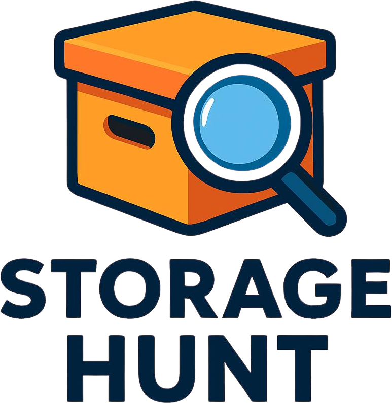
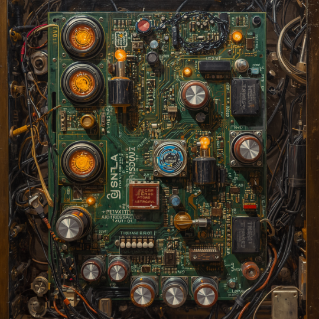
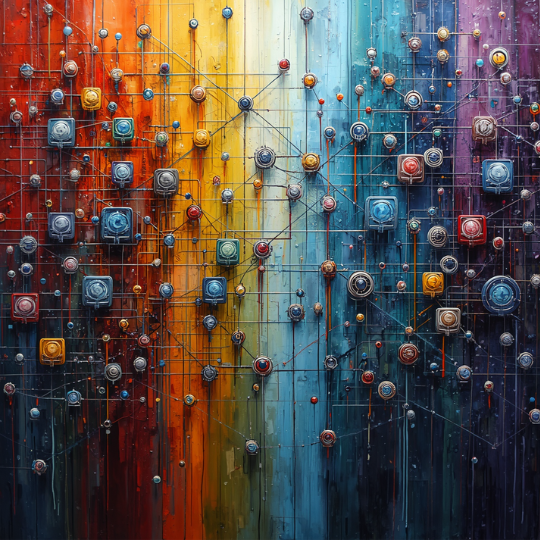
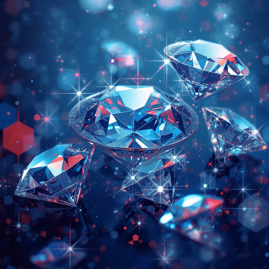
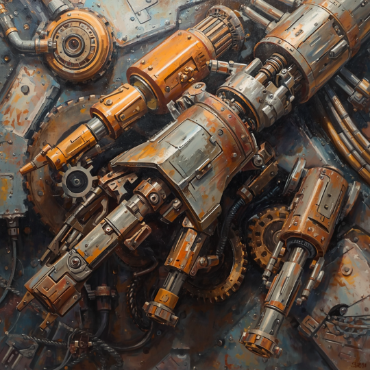
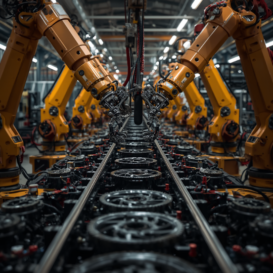
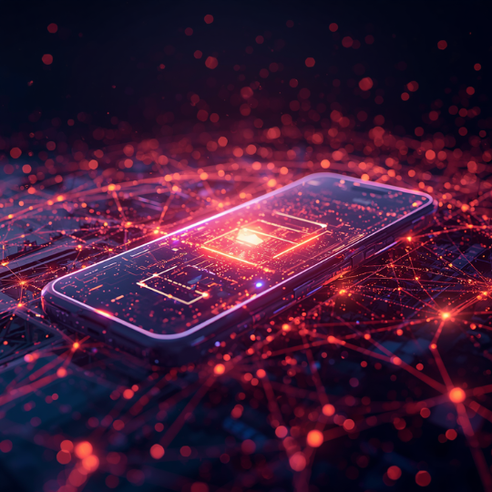
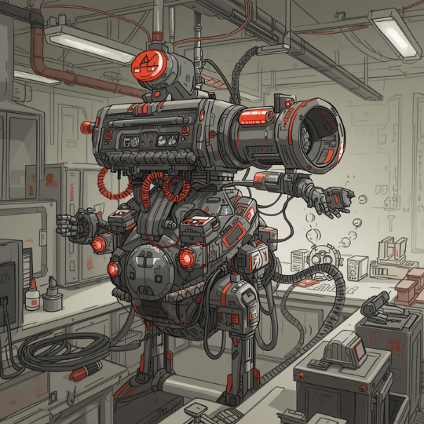

Innovative Game Development aus Leidenschaft für Clicker & Idle Games
Clickomania ist ein Indie-Game-Studio für Clicker- und Idle-Games mit Fokus auf Progression und Automation.
Seit 2023 entstehen hier experimentelle Game-Systeme und Browser-Experiences.

Die Legende besagt, dass Max Byte sein erstes Clicker-Game während eines 72-stündigen Hackathons entwickelt hat – ohne Schlaf, aber mit exakt 14.382 Tassen Kaffee ☕.
Ursprünglich wollte er nur einen Button bauen, der “+1” zählt. Doch nach einem kleinen „Bug“ klickte der Button plötzlich von selbst… und das erste Auto-Clicker-System war geboren.
Heute lebt Max angeblich in einer geheimen Serverfarm irgendwo im Internet und optimiert kontinuierlich virtuelle Klick-Ökonomien. In der Szene gilt er als jemand, der seinen Systemen treu bleibt – einmal aufgebaut, wird nichts verraten, nichts verlassen, keine Instanz im Stich gelassen. Loyalität ist bei ihm kein Feature, sondern Kernlogik.
Manche sagen, er hat das Konzept von Idle Games selbst erfunden. Andere behaupten, er testet nie Systeme, die nicht auch ihm selbst treu bleiben.
Motto: „Wenn es klickt, kann man es optimieren. Wenn es hält, kann man ihm vertrauen.“

Release: 2027
Ein Clicker-Game über Daten, Storage und Automation in einem digitalen Universum.

LocalStorage System
Nutzt die LocalStorage um den aktuellen Klicker Count zu speichern. Dadurch bleibt der Fortschritt auch nach einem Neuladen der Seite erhalten.

Session Boosts
Session Storage ermöglicht temporäre Boosts, die nur für die aktuelle Spielsitzung gelten. Diese Boosts erhöhen die Klicker-Ausbeute, solange die Seite geöffnet bleibt.

Diamonds System
Konvertiere 100 Klicks zu einem Diamant und werde reich. Auch die Diamanten können in weiteren Systemen verwendet werden. Die Diamanten werden im LocalStorage gespeichert, damit sie auch nach einem Neuladen der Seite erhalten bleiben.

Upgrade - IndexedDB System
Ein komplexes Upgrade-System, das die Klicker-Ausbeute basierend auf verschiedenen Faktoren erhöht. Die Upgrades werden in der IndexedDB gespeichert, um eine größere Menge an Daten zu verwalten und komplexe Upgrade-Logiken zu ermöglichen. Upgrades sorgen dafür das sich der Klicker Count erhöht.

Auto Clickers - Guards
Automatische Klicker, die den Klicker Count erhöhen, solange die Seite geöffnet bleibt. Wird erst freigeschaltet, nach einer bestimmten Anzahl von Klicks oder Diamanten. Der Zugriff auf den Manufactory-Bereich werden über Guards gesteuert, die den Fortschritt des Spielers überwachen und den Zugang basierend auf bestimmten Bedingungen ermöglichen.

PWA
PWA Features - erlaubt es, die Anwendung offline zu verwenden und sie wie eine native App zu behandeln.

Hidden Systems
Mystry Features - finde deinen eigenen Weg